Chapter Six
Section (a)
Ayaat in Praise of Contentment
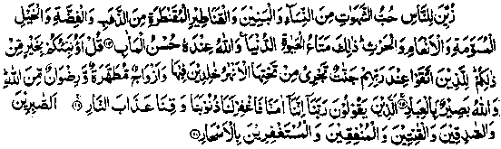
Beautified for mankind is the love of the joys (that come) from women and children, and stored up heaps of gold and silver, and branded horses and cattle and crops. But all these things are for enjoyment in worldly life. Allah, with Him is a more excellent abode. Say (O Muhammad): Shall I inform you of something better than all these things? For those who keep from evil, with their Lord are Gardens, underneath which rivers flow, and pure companions and pleasure of Allah; for in Allah’s sight are all His bondsmen. Those who say: ’Our Lord, we believe (in Thee) so forgive us our sins and guard us from the punishment of Fire. Those who are steadfast, truthful, and obedient, those who spend (and hoard not), those who pray for pardon In late hours of the night. (Aal-e-Imran: 14-17)
In these Ayaat, Allah Ta'ala considers our love for these things to be, in reality, love for lustful pleasures that come from them. Imaam Ghazali writes:
"Passionate love is another name for excessive lust-a malady which preys upon idle minds. The disease should be treated at its early stage by striving not to show any interest and by trying to divert ones attention away from the object of attraction. Once the attachment grows strong, it is as difficult to suppress it as it was easy to subdue in the beginning. This is true of all passions: For example, lust for wealth, desire to win worldly honour and popularity, ambition for acquisition of property, love for children, even fondness for pet birds (like pigeons, etc.) and love of games like chess and other similar pursuits. After these passions become obsessions, they spell ruin for a person, both in this world and the Akhirah. The fact can be illustrated by a very simple example from everyday life: that of a horse-rider who, finding his animal taking a wrong course, immediately pulls the reins and turns it to the right path. If he allows it to go astray and enter a narrow doorway and only later thinks better of it, and tries to pull it back by gripping its tail, he will certainly experience great difficulty. Hence, it is imperative to be on one’s guard against these passions from the very beginning and keep them within the limits of moderation". (Ihya)
The Ulama say that all worldly things fall into three broad categories: (1) the minerals (the inanimate things), (2) the plant life and (3) the animal life. In the Ayaat quoted above, Allah Ta'ala has alluded, to all categories of worldly goods and warned His men against over indulgence in them. He Subhanahu Ta'ala mentions “women and children, thereby referring to man’s love for his wife, children, kinsmen and friends, etc., among one’s kind. Similarly, reference to ‘gold and silver’ includes all mineral wealth; ‘horses and cattle represent all kinds of animals, and mention of ‘well-tilled land’ refers to all kinds of agricultural produce. Put together, all these things constitute the riches and valuables of the world. (Ihya)
After recounting all these things and cautioning His men against their evil effects, Allah Ta'ala says that all those things are for temporary use in the short worldly life. That is to say, none of these are really worthy of being praised or loved. Only things that endure eternally and whose benefits are everlasting deserve to be valued. And, of course, the most sublime virtue is winning the pleasure of Allah Ta'ala, which transcends every other bliss. At another place in the Holy Qur’an, after describing some bounties of Jannah, Allah Ta'ala says:
The greatest bliss is the acceptance from Allah. This is the supreme triumph. (at-Taubah: 72)
As a matter of fact, no other pleasure or bounty of Allah, neither of this world nor of the Akhirah, can vie with the bliss of winning Allah’s pleasure. In the above mentioned Ayaat, Allah Ta'ala has given a detailed account of all the attractions and temptations of the world and then cautioned us against excessive indulgence in them, asserting that all these things are meant only for fulfilling temporary needs of worldly life. Moreover, at various other places in the Holy Qur’an, the believers have been warned, in various ways, against the harmful effects of worldly riches. In some Ayaat, greed and covetousness have been deprecated; in other, those who prefer worldly requirements to A‘maal have been censured; in still other Ayaat, men have been cautioned against the transitoriness of the world; while a number of Ayaat assert that worldly wealth is a mere deception. In short, it has been driven home that this world and all its goods are short-lived, created only for the fulfilment of temporary needs. This world is not eternal and, therefore, it does, not behove a believer to set his heart upon worldly things. Given below are a few more Ayaat on the same subject, which further emphasise this precaution:
1. Such are those who buy the life of this world at the price of Akhirah. Their punishment will not be lightened, neither shall they be helped. (al-Baqarah: 86)
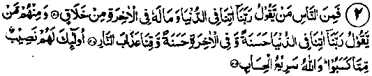
2. But there are men who say: ‘Our Lord, give unto us the bounties in this world’ and they have no portion in the Hereafter. And there are men who say! ‘Our Lord, give unto us in this world that which is good and in the Akhirah that which is good, and guard us against the doom of Fire’. For them there is in store a goodly portion out of that which they have earned. (al-Baqarah: 200-201-202)
3.. And of mankind there are those who would sell their very self, seeking the pleasure of Allah; and Allah hath compassion on (such of) His devotees, (al-Baqarah: 207)
4. Alluring is the life of the world for those who disbelieve; they make a jest of the believers. But those who keep their duty to Allah will be above them (in rank) on the Day of Resurrection, because Allah provides to whomsoever He will, boundless bounties. (al-Baqarah: 212)
5. Such days (of varying fortunes) do we cause to follow one another for mankind. (Ale-Imran: 140)
The Ayat means that, sometimes, one community gains domination over others; on another occasion, some other nation gains supremacy. The suggestion is that people should not worry too much about their being dominated, by others; they should rather be more concerned about the life of Akhirah, which is of far greater consequence.
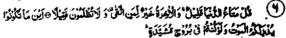
6. Say (to them, O Muhammad) the comfort of this world is scant (short-lived); the Akhirah is better for him who fears Allah; you shall not be wronged (the measure of) a single date-fibre. Wheresoever you may be, death will overtake you, even though you should be in strong and lofty towers." (an-Nisaa: 77 -78). (So, as death is inevitable, one should ever remain concerned about one’s final fate.)
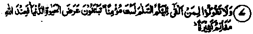
7. And say not to one who offers you a salutation, ‘Thou art not a believer, seeking the cherished goods of this life (so that you may despoil him). With Allah are plenteous spoils." (an-Nisaa- 94)
These Ayaat were revealed as an admonition to some Muslims who in their fondness had killed, for war booty’ a few non-believers who offered to profess Islam. Ayaat condemn this heinous act committed for a paltry gain of the world. Many Traditions give detailed accounts of the circumstances that led to this unfortunate incident A version has it that a Muslim attacked a non-believer who hastily recited the Kalimah (as a profession of Faith) but the Muslim, in spite of this, put him to death. The incident was reported to Rasulullah Sallallaho alaihe wasallam who demanded an explanation from the Muslim. When he replied, by way of apology that the non-Muslim had made profession of faith only out of fear, Rasulullah Sallallaho alaihe wasallam said, "Did you look into his heart to see that he was doing this for fear of death?" It is related that, later, this particular Muslim died a miserable death. (Durre Manthur)
Under no circumstances does Allah Ta‘ala allow His men to transgress the limits of justice and propriety. It should suffice to say at this point that the Islamic Law (Shariah) strictly forbids its votaries to wrong the non-believers for the sake of worldly gains. This forms the subject of a good many Qur’anic Ayaat and Traditions. For example, in the opening Ayaat of Surah al-Maaedah, the believers have been warned:
And let not your hatred of a folk who stopped your going to the sacred place of worship lead you to transgression and hostility; but help ye one another unto righteousness and pious duty; help not one another unto sin and transgression. (al-Maaedah: 2)
And, a few Ayaat later, in the same Surah, Allah Ta'ala says:
O ye who believe! Be steadfast witnesses for Allah in equity, and let not hatred of any people seduce you that you deal not justly. Deal justly, that is nearer to your duty. (al-Maaedah: 8)
In short, in numerous Ayaat, the believers have been warned against transgression, in all circumstances. The fact is that worldly love blinds the faculty of reason.
8. Naught is the life of the world, save a pastime and sport. Better far is the abode of the Akhirah for those who keep their duty (to Allah). Have ye then no sense. (al-An'aam: 32)
(In other words have you no sense to understand the plain truth that the diversions and pastimes of this world are nothing in comparison with the blissful life of the Akhirah?)
9. And forsake those who take their religion for a pastime and a jest, and whom the life of the world beguiled. (ql-An'aam: 70)
10, Now (after death), you have come to us alone as We did create you the first time; and you have left behind you all that we bestowed upon you. (al-An'aam: 94)
Note: Everyone is born naked, with no worldly effects on him. Similarly, after death, every person is laid in the grave, bereft of all his possessions. Only the portion of wealth that is spent in this life, for the cause of Allah Ta'ala, is stored up in the Divine Treasury of the Akhirah, and is paid back to him in full, with bountiful increase from Allah Ta'ala.
11. The worldly life beguiled them! (al-A'raaf: 51)
12. So, (after the righteous people) there succeeded a generation who inherited the Scriptures but grasped the goods of this low life and who say: ‘It will be forgiven us’ (as we are the loved ones of Allah Ta‘ala). (al-A‘raaf: 169)
13. And the abode of the Hereafter is better for those who ward off (evil). Have you then nd sense? (al-A'raaf: 169)
14. And know that your possessions and your children are but a test, and that with Allah lies immense reward. (al-Anfaal: 28).
15. You desire the goods of this world and Allah desireth (for you) the Akhirah. (al-Anfaal: 67)
16. Do you take pleasure in the life of the world rather than in the Akhirah? The comfort of the life of the world is but little, compared with the life in the Hereafter. (al-Taubah: 38)
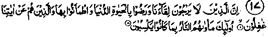
17. Behold! Those who do not look forward to meeting us, and are well-pleased with the life of the world, and feel secure therein, and those who are heedless of Our admonitions-;their abode will be the Fire because of the (evil) deeds they used to commit. (Yunus: 7-8)
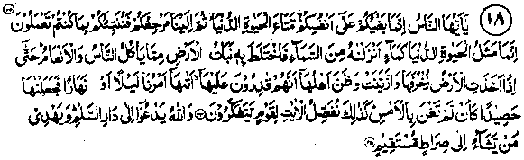
18. O mankind! Your rebellion is only against yourselves; (you have) enjoyment of the life of the world (for a brief period); then unto Us you shall return and We shall proclaim to you what you used to do. The likeness of the life of the world is only as water which We send down from the sky; then, by its mingling with the earth, arises the produce of the earth (in thick profusion) of which men and cattle eat till, when the earth has taken on her (golden) ornaments and is (fully) embellished (i.e. the crops and greenery has reached its fullest bloom) and her inhabitants deem that they are masters of her, (suddenly) Our commandment comes (upon it) by night or by day and We make it as reaped corn, as though it had not flourished the day before. Thus do We expound the revelations for a people to make them realise (the true nature of worldly life). And Allah summons you to the abode of (Eternal) peace and (He) guides whosoever He will to a straight path. (Yunus: 23-24-25)
After recounting, in the preceding Ayaat, a number of excellent qualities of the Holy Qur’an, Allah Ta'ala says:
19. People should rejoice in this Bounty of Allah, and in His mercy. It is far better than (the worldly things) which they hoard. (Yunus: 58)
20. Whoso desires the life of the world and its adornments, We shall repay them (in full) for his deeds herein, and they are not made to suffer loss therein. Those aYe they for whom there is naught in the Hereafter save the Fire. (All) that they contrive here will become vain and (the fact is that ail) they are wont to do is fruitless. (Hud: 15-16).
21. Allah enlarges livelihood for whomsoever He wills and straitens (it for whomsoever He wills). And they rejoice in the life of the world, whereas the life of the world is but passing enjoyment, as compared with the life of Akhirah. (ar-Ra‘d: 26)
22. Do not (so much as) raise your eyes to look at what We have granted to different categories of the nonbelievers to enjoy (for, they will just derive brief joy from worldly things which are doomed to perish soon). (Hijr: 88)
23. That (all worldly goods) which you have, shall waste away. But what is with Allah endures forever. (Nahl: 96)
24. (The painful chastisement described in the foregoing Ayaat will afflict them) That is because they were enamoured of this world rather than the Akhirah. (Nahl: 107)
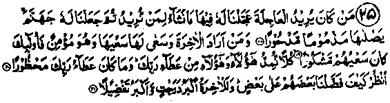
25. Whoever desires that (life) which hasteneth away (i.e. recompense for his deeds in the present life alone), We hasten for him therein what We will, unto whomsoever We please (i.e. such a one is not given all that he desires). (We grant worldly gifts to whomsoever We will and even We, rather grant him only as much as We please And, afterwards We have appointed for him Jahannam; he will endure the heat thereof, condemned, rejected. And whosoever desires the Akhirah and strives for it with the efforts necessary, being a Mo’min (true believer), for such, their efforts find favour (with their Lord). Each do We supply, both these and those, (the pious and the worldlings) from the bounty of thy Lord. And the bounty of thy Lord (worldly gifts) can never be confined. Just behold! (How We prefer some of them over others (Muslims and non-believers alike in bestowing worldly gifts). But, verily, the Akhirah (prepared exclusively for the believers) will be higher In grades and be for more blessed. (Judging by this, you can see that the worldly gifts are being bestowed by Allah Ta'ala, and not being earned by people according to the measure of their struggle. For, some people struggle hard but derive less worldly gains than others who gain big fortune with little efforts). (Bani Israel: 18-21)
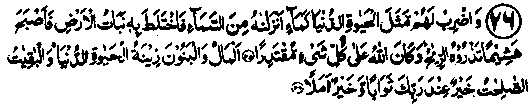
26. And set before them the similitude of the life of the world as water which We send down from the sky, and the vegetation of the earth mingles with it, and then (after it has become green and luscious suddenly some calamity befalls it), it becomes (mutilated) dry twigs and the winds scatter it about. Allah is able to do all things. Wealth and children are (merely) the adornment of the life of the world; but good deeds( of the righteous) which endure are (for) better in thy Lord’s sight for reward, and (also much) better in respect of hope. (Kahf: 45-46)
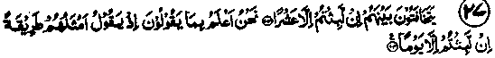
(The-Ayaat are preceded by an account of the Day of Resurrection and the blowing of the Trumpet (Sur). On that Day, the evil-doers shall be)
27. "Murmuring among themselves: "You have stayed (in the world) only for ten (days).‘We are best aware of what they shall utter when the soundest of opinion among them says: (No), you have tarried but a day." (In truth the entire span of one’s life is far shorter than even one-tenth of a day of the Akhirah. So brief is our sojourn in the temporal world, compared with the eternal life of the Akhirah). (Taha: 103-104)
28. Do not so much as raise your eyes to look at what worldly things we have granted to different categories of people to enjoy it is merely the glamour of the life of the world (and We grant it to them) so that We may test them therein. And the bountiful provision of thy Lord (to be granted in Akhirah) is. far better and far more enduring. And enjoin upon thy kinsmen (people) to offer Salaat and be (thyself) constant therein. We ask not of thee (to find thine own) provision. (It is) We (Who) provide for thee. And the best future is for righteousness. (Taha: 131-132)
29. Reckoning has drawn nigh for mankind while they are turning away in heedlessness.’ (al-Ambiya: 1)
30. When death comes unto one of them (wicked) he sayeth: "My Lord, send me back (to the world) so that I may do good (in that world) which I have left behind.’ (Allah Says;), "By no means! What he says is meaningless words. (Mu’minoon: 99-100)
31 (on the Day of resurrection). He (Allah) would say (to them to add to their grief and sorrow); (Tell us), "How long you tarried in the earth counting by years"? They will say: "We might have tarried but a day or a part of a day. Ask of those (the angels) who kept an account of everything.” He (Allah)’will say: "Indeed you tarried but a little, if you only knew (about the transience of worldly life). Did you think, then, that We had created you for a pastime? Still (did you presume that) you would not be brought back again to us". (Mu’minoon: 112-115)
32 (These people who take pride in their luxurious living are, in reality, foolish. Don’t they know that): "Many a community have We destroyed who felt insolently proud of their luxurious life. (Look and see for yourself). Those are their dwelling-places, which have not been inhabited after them, except a little’. (al-Qasas: 58)
33 And whatever you have been given is for temporary use in the life of the world, and an adornment (of the same short-lived life) and that which Allah hath (in the form of bounties and rewards of the Akhirah) is far better and much more enduring than all these things. Have you then no sense? (al-Qasas: 60)
34 Is he whom We have promised a fair promise, which he will surely receive (in the Akhirah), like him whom We have given some paltry pleasure of this life and then, on the Day of Resurrection, he will be prosecuted (for his evil deeds). (al-Qasas: 61)
35 Those who were desirous of the life of the world said (as they saw Qarun (Korah) rolling in wealth): ‘Ah! would that we had been given the like of what had been given unto Qarun. Lo! he is possessed of rare good fortune." (al-Qasas: 79)
Note: The detailed story of Qarun, together with a description of the exemplary punishment meted out to him, has been given at serial No.3, in chapter 5 of part one of this book (sub-titled ‘On Not paying Zakaat’). The fact is that excessive wealth, unless it is made a means to win the pleasure of Allah Ta‘ala through generously spending in His cause, leads its possessor to such horrible doom.
36 This life of the world is but a pastime and a game. Lo! The Home of the Akhirah-that is the life (really worth Its name); if only they knew (this fact for certain, they would certainly try hard for the bounties of the Akhirah)’. (Ankaboot: 64)
.37 They know only some appearance of the present life, and are heedless of the Akhirah1' (they do not aspire for the rewards of the Akhirah; nor do they feel afraid of the punishments therein.) (ar-Rum: 7
38 "O, mankind! Keep your duty to your Lord and fear a Day when the parent will not be able to avail the child in aught, nor the child to avail the parent. Lo! Allah’s promise (concerning the Day of Judgement) is the very truth. Let not, the life of the world beguile you, nor let the deceiver (Shaitan) beguile you, in regard to Allah." (In other words, let not the Shaitan seduce you into unconcern regarding the Divine Punishment; nor let him goad you into the wrong belief that you are not going to be punished for your misdeeds). (Luqman: 33)
Commenting on these Ayaat, Sa'eed Ibne Jubair Rahmatullah alaihe says: "Let not the deceiver beguile you with regard to Allah means, you should not persist in sinning, hoping to be granted forgiveness by Allah Ta'ala.' (Dune Manthur)
It behoves a person to beg forgiveness only after he has turned to Allah in sincere repentance and made up his mind to avoid sins in future. It looks absurd that a person should persist in disgracing himself in the sight of Allah, by sinning throughout the day and should, all the same, keep saying, "O Allah!.Grant me forgiveness." This subject will be treated in detail under Hadith No. 18 of this Chapter. There is also another Ayat of the same import in subsequent pages.
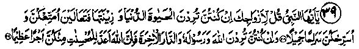
39 O Nabi! Say unto your wives: If you desire the world’s life and its adornments, come! I will content you (give you some money and other worldly goods, dower, maintenance, etc.) and will release you with a fair release (divorce you with a fair deal and part from you in kindness). But if you desire Allah and His Rasul and the abode of the Akhirah, then, lo! (bear in mind) that Allah has prepared for the pious among you an immense reward. (al-Ahzab: 28-29)
40 O mankind! Lo! The promise of Allah is true. So let not the life of the world beguile you, and let not the (avowed) beguiler (Shaitan) beguile you with regard to Allah. (Let him not deceive you into indifference towards Allah and the Divine Retribution). (al-Fatir: 5)
Sa'eed bin Jubair Rahmatullah alaihe explains the Ayat as follows: "The beguilement arises out of excessive indulgence in worldly affairs, which makes a person negligent in his preparation for the Akhirah; the deception of Shaitan consists in his inciting a man to persist in sinning, in the hope of forgiveness by Allah Ta'ala." (Durre Manthur)
41 (A believing man of the family of Fir‘aun (Pharaoh), who hid his faith, said to them) ‘O my people! Lo! This life of the world is but a passing enjoyment and lo! the Akhirah, that is the enduring abode, (al-Mo’min: 39)
42 Whoso desires the harvest of the Hereafter, We give him increase in the harvest. And whoso desires the harvest of the world (concentrates all his efforts on achieving worldly gains), We give him something thereof, and he hath no portion in the Hereafter. (ash-Shura: 20)
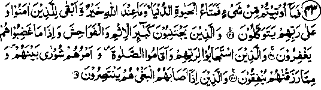
43 Now whatever thing you have been given is but a short-lived enjoyment in the world; and that which Allah hath is far better and more lasting. It is only for those 1who believe and put their trust in their Lord, and those who avoid the worst of sins and shameful deeds, and when they are angry, forgive; and 2those who answer the call of their Lord (obey His Commandments) and establish Salaat, and whose affairs are guided by mutual counsel. And3 who spend (generously) of what We have given them; and 4when a great wrong is done to them they defend themselves. (ash-Shura: 36-39)
The Ulama have traced in these Ayaat the chronological succession of the four Khulafaa-e-Rashideen a,subtle reference to certain important happenings in their periods of time and to their specific virtues has made a mention of by small numbers 1-2-3-4.
44 And the Mercy of thy Lord is far better than (the wealth) that they amass. (Zukhruf: 32)
In the Ayaat immediately following this text, a number of attractive features of the world have been described; and, then Allah Ta'ala says:
Yet all that (i.e. roofs, doors, etc., of gold and silver mentioned in the foregoing Ayaat) would have been but a (temporary) provision of the life of the world. And the Akhirah with your Lord is for those who keep away from evil. (az-Zukhruf: 35)
45 I created the jinn and humankind only that they might worship Me. I seek no sustenance from them, nor do I ask that they should feed Me. Lo! Allah, He is the sole Sustainer, the Lord of unshaken might. (az-Zariyat: 56-58)
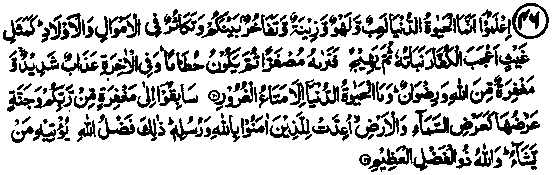
46 Know that the life of this world is only play and pastime and show and boasting among yourselves and rivalry in respect of riches and children. These are like vegetation after rain, whereof the growth is pleasing to the husbandman, but afterwards it dries up and you see it turning yellow, then it becomes crumbled straw. And in Akhirah there is grievous punishment (which everybody should try to ward off by all means) and also forgiveness from Allah and His pleasure (which everybody should struggle to achieve in a manner and to an extent befitting this coveted ideal.) And (bear in mind) the life of the world is but a matter of illusion. Race one with another for forgiveness from your Lord and the Jannah whereof the breadth is like the breadth of the heavens and the earth, which is in store for those who believe in Allah and His Rasuls. Such is the bounty of Allah, which He bestows upon whomsoever He pleases, and Allah is of Infinite Bounty. (al-Hadid: 20-21)
Imaam Ghazali Rahmatullah alaihe writes:
"As soon as a child grows up into a sensible young boy, he feels naturally inclined towards fun and sports; because of a passionate attachment, nothing interests him more than games. Later, when he reaches adolescence, a fondness for the adornments of life, fine dress, etc., and love of pastimes like horse-riding, etc., occupy his mind. And he is so enamoured of these that the sports of boyhood seem absurd to him by comparison. Then follows the period of youth and of lustful desires. At this stage, all other diversions lose charm for the young man and he begins to value sensual pleasures above everything else-even above wealth and property, honour and glory. The next phase begins with the emergence of a sense of superiority, vainglory and the desire to have a say in state-craft. And these attachments overpower all other desires. Put together, all these constitute carnal pleasures of the world. What follows these phases, is the surging in the heart of a keen desire to seek a true knowledge of Allah. These feelings transcend all other pleasures. This is the only genuine passion, and the most powerful one, worthy of being cherished by a man".
To conclude, everyone is tempted towards sports in boyhood; is swayed by lusts in early youth; and in the twenties, a passion for power is born in him. In the forties, everybody is more or less imbued with a desire to gain a true cognition of Allah Ta'ala and a longing to acquire knowledge of the Ultimate Truth.
We see that a boy loves games and sets little value by pursuits, such as associating with women and hankering after power. Similarly, the worldlings laugh at those engaged in gaining true knowledge of Allah because they have no idea of the spiritual bliss experienced by the latter. However, the mystics (Sufis) know that the worldlings are like young boys who have no idea of the pleasures enjoyed by grown up men. (Ihya)
In these Ayaat, Allah Ta'ala has made a mention of all manner of worldly pleasures and, then, has given a warning against indulgence in these, saying that all these joys are mere deception and that only the life of Akhirah is of permanent and lasting value. The pleasures of worldly life are like crops that flourish and please the eye for some time, but wither up soon to be blown away by the winds.
47 Lo! These (people) love fleeting life, and put behind them (the remembrance of) a grievous Day (that lies ahead). (ad-Dahr: 27)
They are not concerned about the Resurrection Day, nor do they prepare for the Akhirah. The love of worldly wealth has made them blind to their own final fate and they are neglectful of such a fateful Day of woe and misery.
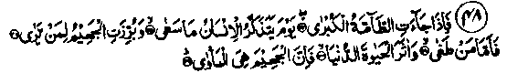
48 But when the great Disaster (Day of Catastrophe or the Resurrection Day) cometh, the Day when man will call to mind (the things) he endeavoured for (in this world); And Jahannam will stand forth visible to him who seeth. Then (it is the rule of the Day that) whosoever rebelled (against his Lord in this world), and preferred the life of the world, lo! Jahannam will be his home. But as for him who (in this world) feard to stand before his Lord (for Reckoning) and restrained his soul from (unlawful indulgence in) lust, lo! The Jannah will be his home. (an-Naziat: 34-41)
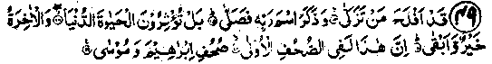
49 "He is (really) successful who purifies himself (of sins); and remembereth the name of his Lord and observes prayers (Salaat). But (you do not take the counsel revealed in the Holy Qur’an and) you prefer the life of the world; although the Akhirah is far better (than the life of the world) and everlasting.
Lo! This is in the former Scriptures; the Sahaaif (Booklets) of Ibrahim and Musaa." (al-A‘la: 14-19)
Note: There are numerous Traditions regarding the contents of these ‘revealed Sahaaif (Booklets). One of the Ahadith has it to the following effect:
"Abu Zarr Radhiallaho anho narrates that he once asked Rasulullah Sallallaho alaihe wasallam about the total number of revealed Sahaaif. Rasulullah replied, "In all, a hundred Sahaaif and four Sacred Books were revealed. Fifty Sahaaif were revealed to Sheeth Alaihissalam, thirty to Idrees Alaihissalam, ten to Ibrahim Alaihissalam and ten to Musaa Alaihissalam before the Torah. In addition, four books i.e. the Torah, the Injeel(Gospel), the Zaboor (Psalms), and the Holy Qur’an were revealed respectively to Musaa Alaihissalam, Isaa Alaihissalam, Dawood Alaihissalam, and Muhammad Sallallaho alaihe wasallam.
Abu Zarr Radhiallaho anho then enquired about the contents of the Booklets revealed to Ibrahim Alaihissalam. Rasulullah Sallallaho alaihe wasallam replied that they consisted of parables (containing admonitions). For example, one of these parables ran like this: ‘O you domineering, proud king! I did not raise you to kingship to hoard wealth, but I granted you power in order that you might redress the complaints of the oppressed and prevent these from reaching Me. For, I do not reject the invocation of the oppressed person, even though he be a disbeliever! And another ran: it is incumbent upon a wise man, unless he loses sense, to divide his time in three parts: one part should be devoted to the worship of Allah Ta'ala and holding communion with Him in solitude;one past should be reserved for self-reckoning as to the time spent on good or bad deeds (the excellence of every good deed, the gravity of every bad action, and the time wasted in idle pursuits); and one part should be set apart for lawful earning of livelihood. The time spent in this last occupation should be of help to him in performing the other two, affording him fuller concentration and greater amount of leisure h is also incumbent upon a wise man to make the best use of his time, to remain fully absorbed in his occupations and spiritual pursuits and to guard his tongue (against idle talk). For whoever exercises restraint in speech will not indulge in useless talk. Moreover a wise man should strive for three things: he should try to improve his means of earning livelihood, he should struggle to make provisions for the Akhirah and he should try to provide himself the lawful comforts of life (food, drink and sleep, etc). Time spent in any occupation other than these three is useless. So, before starting to do something, one should consider and make sure whether it falls under one of these categories.
Abu Zarr Radhiallaho anho then enquired about the contents of the Sahaaif revealed to Musaa Alaihissalam. Rasulullah Sallallaho alaihe wasallam replied: "They contained admonitions (such as): T wonder how any person can take joy in anything, in spite of his belief in the inevitability of death!’ I am astonished at him who laughs in spite of his faith in the certainty of death’. I am astonished at him who observes the vicissitudes of life and turns of fortune (for instance, a millionaire reduced, in a short while, to poverty and begging from people; or a gaol-bird, released from prison, rising to power and becoming a ruler) and, still, finds satisfaction in worldly pursuits!’ I am astonished at a person who believes in predestination and, still, grieves over any misfortune’. I am astonished at a person who believes that he will have to face Reckoning (on the Day of Judgment) for all his deeds and, still, does not perform good deeds’. (On the Day of Judgement, all financial, and physical wrongs will have to be redressed through the transfer of his good deeds to the credit of the wronged. If his good deeds are exhausted before compensation for the wrongs, then the latter’s sins will be put in his account).
"Abu Zarr Radhiallaho anho then asked whether anything of the subject-matter of these Booklets was also revealed to him. Rasulullah Sallallaho alaihe wasallam replied. "Yes, The Ayaat beginning:
'Successful is he who purifies himself.......... (Quoted above)’. (Durre Manthur)
Ibne Abbas Radhiallaho anho says: "Allah Ta'ala says in Surah Najm, praising Ibrahim Alaihissalam:
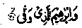
And Ibrahim who paid back (what he owed to Allah) in full".
The Ayat means that Ibrahim alaihissalaam fulfilled all that Islam demands. These demands fall into thirty broad categories, termed as thirty ‘Sihaam’ of Islam. Ten of these Sihaam have been indicated in the Verses beginning:
(Lo! Allah hath bought from the believers...........(at-Taubah: 111112).
Ten others have been recounted in Surah Ahzaab in the Verses beginning:
Lo! men who surrender to Allah and women who surrender, (al- Ahzab: 35)
Six more have been described in the opening Ayaat of Surah al-Mo’minoon and the description of four others occurs in Surah Ma'ary in the Ayaat beginning:
And those who believe in the Day of Judgement).........(al-Ma‘ary: 26-35)
Put together, these make thirty in all.
Whosoever meets his Lord (On the Day of Judgement), after having fulfilled one of these obligations, will be deemed to have practised one-thirtieth part of Islam". (Durre Manthur)
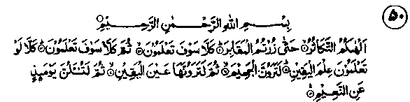
50. Rivalry for increase (in worldly good) has diverted you (from remembrance of the Akhirah). Until you come to the grave. No! But you will soon (as soon as you enter the grave) come to know (the true nature of the world and the supreme value of the Akhirah). (You are warned once again; take heed!). (No! These things are not worthy of your notice and you should not feel proud of them). Nay! But you will (soon) come to know (when you are resurrected on the Day of Judgement. You are warned a third time, that these things are not worth your concern and that they should not make you feel proud of yourselves). Nay, would that you knew (now) with a sure knowledge! (from your study of the Holy Qur’an and Ahadith that these things should not make one feel proud of oneself, as you will realize after death; then you would never have indulged in them). For, (by Allah!) you will behold the fire of Jahannam. By Allah! you will behold it with a sure vision. Then, on that Day, you will undergo reckoning concerning all the bounties of Allah. (at-Takathur: 1-7)
Note: There are numerous Ahadith which give extensive details of the reckoning on the Day of Judgement, regarding the bounties of Allah Ta‘ala. These serve as illustrations giving an idea of the countless bounties of Allah Ta‘ala, which are being showered upon all men, on all occasions day and night, in such large numbers as defy human calculation. Says Allah Ta'ala, and He speaks the Truth (beyond any doubt):
And if you would count the Bounties of Allah you cannot number them. (Ibrahim: 34 Nahl: 18)
A Hadith says:
"Once, Rasulullah Sallallaho alaihe wasallam recited this Surah (Takathur)and when he came to the Verse,
Then, on that Day, you will be questioned concerning all the Bounties (of your Lord).
he remarked:
'You will be questioned in the presence of your Lord regarding the cold water you drink; the protection provided by your houses” (Allah Ta'ala will say. "We granted you cool shade and protection from sun and rain); and regarding your having enough food to satisfy your hunger; and regarding the soundness of your limbs” (Allah Ta'ala will say, We granted you sound and healthy limbs......... hands, feet, eyes, ears, nose, etc, what have you done to express your gratitude for all these gifts); and regarding the sound sleep you enjoy; and regarding your being able to win, in marriage, the hand of a woman of your choice, whom someone else also wanted to marry, but Allah Ta'ala married her to you as a special favour (he put it in the minds of her parents that they should marry her to you and not to the other person)”.
If we just consider the Bounties of Allah Ta'ala mentioned in the foregoing Hadith, we can realise how greatly everybody is indebted to Allah Ta'ala for His favours, which are being bestowed, at all times, upon his creatures, rich and poor alike. Is there a man howsoever poor and needy, who is not being constantly granted countless favours and blessings of Allah Ta'ala? Take, for example, the gift of physical health and soundness of limbs, which is, undoubtedly, a great blessing of Allah Ta'ala. Moreover, the capacity to breathe is an invaluable gift of Allah Ta'ala, which every living being enjoys at all times.
Another Hadith says:
"When this Surah (Takathur) was revealed, some of the Sahabah said, "O Rasulullah! What bounties are we enjoying? Our daily provision consists of just half a meal of barley bread, which is not enough to satisfy our hunger". Then came the revelation: "Ask them! Do not they possess shoes to wear? Do not they get cool water to drink? These are also bounties of Allah".
Another Hadith says, to the following effect: "The first question to be asked from a man about Allah’s bounties, on the Day of Judgment, will be: ‘Did we not make your body healthy and give you cold water to drink?". It is revealed in still another Hadith: "Of the Bounties of Allah to be accounted for, on the Day of Judgment are: the piece of bread eaten to satisfy one’s hunger, the water drunk to quench one’s thirst, and the piece of cloth used to cover one’s body.”
Another Hadith narrates: - "Once, on a hot summer noon, Abu Bakr Radhiallaho anho went to the Masjid-e-Nabawai. When Umar Radhiallaho anho came to know of it, he also went to the Masjid and asked Abu Bakr Radhiallaho anho what had brought him out of his house at that hour. He replied that it was intensity of hunger that had driven him to it. Umar Radhiallaho anho said, "By Him, Who is the master of my soul, it is the same with me”. Meanwhile, Rasulullah Sallallaho alaihe wasallam also came there and asked what had brought them there at that hour. They replied that pangs of hunger had brought them out. Rasulullah Sallallaho alaihe wasallam said, "That which brought you out, has also brought me out". All the three then got up and went to the house of Abu Ayyub Ansaari Radhiallaho anho, but he was not at home. His wife was greatly pleased, and when Rasulullah Sallallaho alaihe wasallam asked her where Abu Ayyub had gone, she replied that he would return in a short while. At that moment, Abu Ayyub Ansaari Radhiallaho anho also turned up. On seeing them, he hurriedly went and brought a bunch of dates. Rasulullah Sallallaho alaihe wasallam said to him, ‘Why did you cut off the whole bunch? You could have picked the ripe dates only". He respectfully replied, "O Rasulullah! I plucked the whole bunch so that dates of all kinds, the fully ripe, the half-ripe, the dried ones and the fresh should be before you and you should be able to select the particular kind you relish. So, they ate dates of all kinds. Meanwhile Abu Ayyub Radhiallaho anho slaughtered a small goat, roasted some of its meat and cooked the rest. He then presented it to them. Rasulullah Sallallaho alaihe wasallam took some bread and a piece of roasted meat and, giving it to Abu Ayyub Radhiallaho anho, said, "Take this to Fatimah; she also has not taken anything of this sort for several days". He hurried to comply with it. When all of them had partaken of it, Rasulullah Sallallaho alaihe wasallam said, "We have enjoyed so many Bounties of Allah Ta'ala: meat, bread, the unripe and the ripe dates........" Saying this, Rasulullah Sallallaho alaihe wasallam was moved to tears. These are the Bounties about which one shall be questioned on the Judgment Day!" The Sahabah Radhiallaho anhum were shocked to hear this. It pained them to think that they would have to account for these bounties, in spite of the fact that these things had become available after suffering such pangs of hunger. Rasulullah Sallallaho alaihe wasallam said, "You shall have to render an account, undoubtedly. And, to make amends, you should recite Bismillah (in the name of Allah, the Kind, the Merciful) before starting to eat; and recite the following Du’aa after you have finished:
'All Praise be to Allah Who, in His Infinite Mercy, made us to eat our fill and as a great favour bestowed upon us plentifully’. (Durre Manthur)
There are a large number of Ahadith on these subjects, in the authentic collections, but I do not propose to make such a complete reference. My purpose is to indicate, to my readers, how numerous the references are, in the Holy Qur’an, on the subject of the transience of worldly life, its being unworthy of man’s regard, its insignificance when compared to the values of the Akhirah and its power to make those who indulge themselves in its pleasure, suffer utter loss and damnation in the fire of Jahannam. Besides, I want them to realise how recurring the admonitions and warnings are against indulgence in worldly pleasures. Out of a large number of Ayaat on the subject, I have selected only fifty which, I think, should suffice to give an idea of the extreme significance of this theme.
It is shocking to note that, the more Allah Ta'ala warns us against indulgence in worldly pleasures, the more shamefacedly do we ignore His admonitions. After such indifference towards His Commandments, how can we dare to face our Lord on the Day of Judgement’
'We complain to Allah! And it is He alone Whose help we seek’.